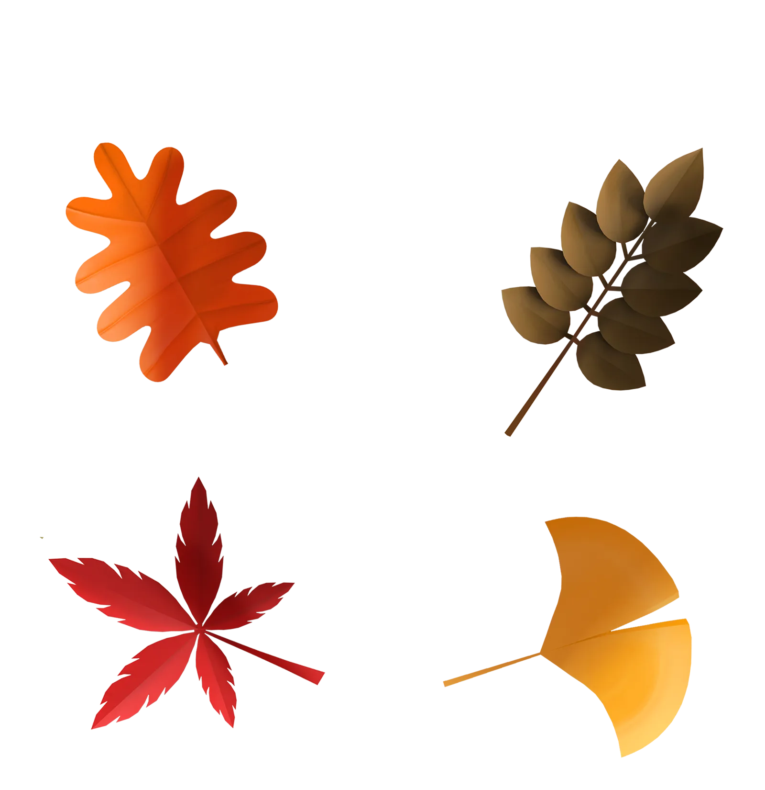
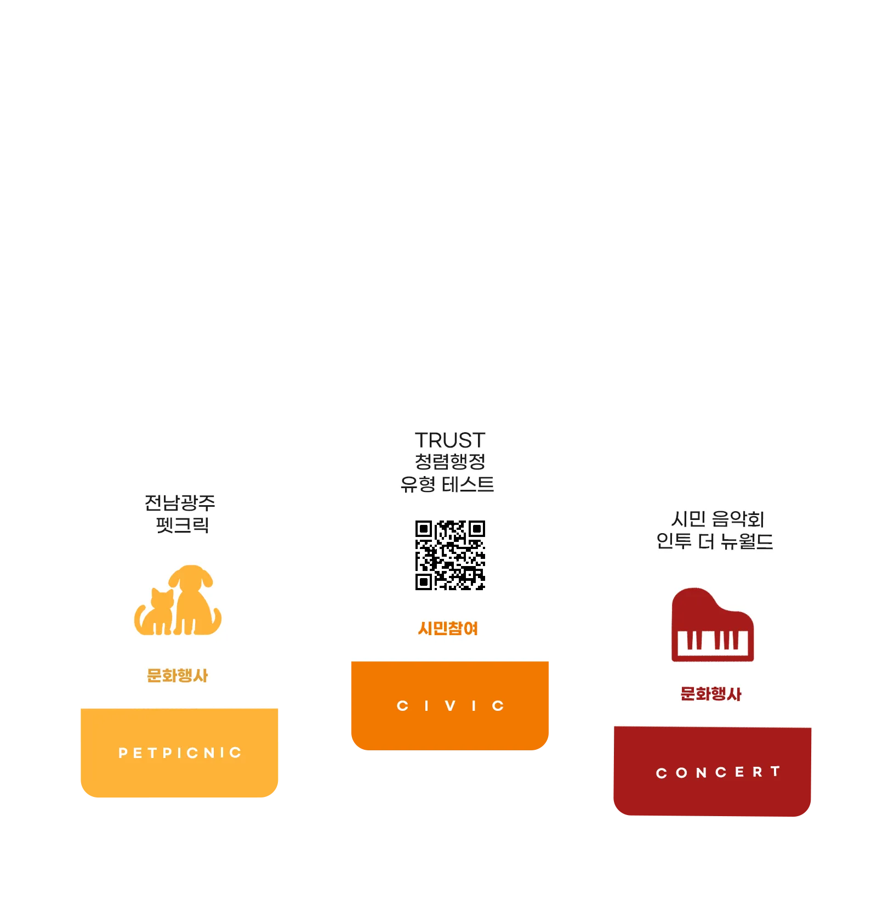
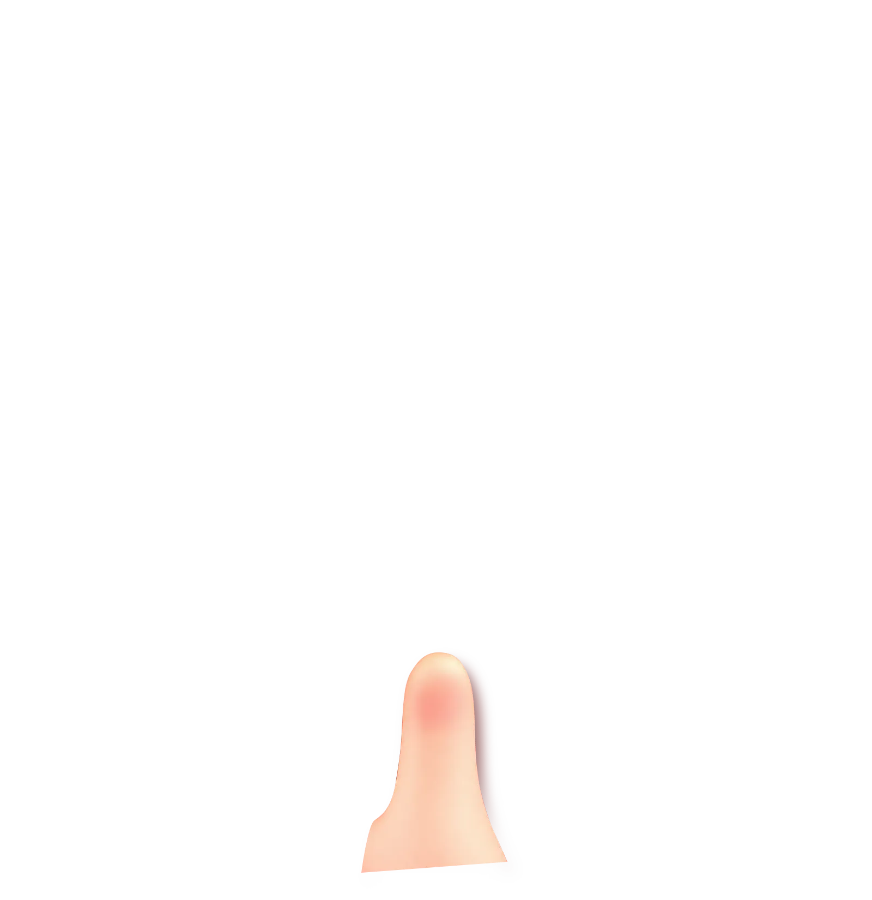
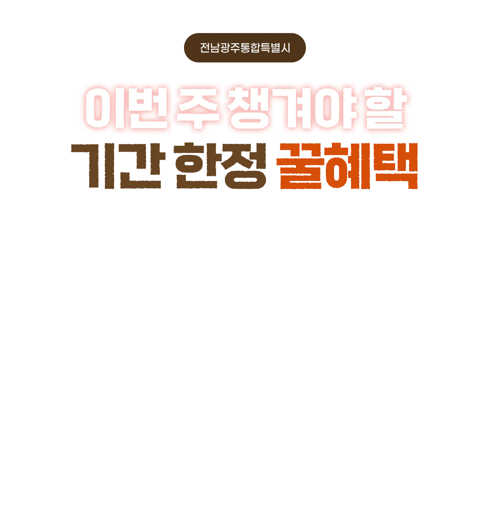

가을처럼 풍성한
문화행사 총정리

민원처리에서 가장 중요한 건?
청렴행정 유형 테스트
시민이 직접 참여해 중요하게 생각하는 청렴행정의 가치를 진단하고, 이에 맞는 시정과 행정 서비스까지 함께 안내받는 ‘트러스트 청렴행정 유형 테스트’를 시작합니다.
- 청렴유형 테스트란?
- 기존의 영상·포스터 중심의 청렴 홍보에서 벗어나 시민이 직접질문에 답하며 결과를 확인하는 참여·체험형 청렴행정 문화 확산 콘텐츠
- 참여방법
-
- 아래 테스트 참여하기 버튼 클릭
- 포스터 내 QR코드 스캔
- 전남광주통합특별시 누리집 >시정소식 > 팝업게시판
- 결과활용
- 시민이 중요하게 생각하는 행정가치를 파악해청렴정책 수립과 행정서비스 개선을 위한 참고자료로 활용
통합특별시 출범 100일!
시민 음악회에 함께해 주세요
10월 8일은 전남광주통합특별시 출범 100일이 되는 날입니다. 출범 100일을 맞아 통합의 의미를 되새기고 새 출발을 축하하는 마음을 담아 예술의전당 대극장에서 ‘인투 더 뉴월드’가 열려요.
- 일시
- 장소
- 전남광주통합특별시 예술의전당 대극장
- 공연
-
- 지휘 백윤학
- 콘서트 가이드 안인모
- 전남광주통합특별시립교향악단, 목포시립교향악단, 전남광주연합오케스트라
- 티켓
- R석 2만원, S석 1만원
- 예매
- 예술의전당 누리집, YES24
찾아갈게요
문화공연이 당신 곁에
광주 5개 자치구별 거점에서 ‘찾아가는 문화 공연-당신 곁에’가 11월 21일까지 열립니다. 모든 공연은 무료로 진행되며, 매주 공연장소가 달라지니 변경사항은 인스타그램에서 확인해 주세요.
- 기간
- ~
- 장소
-
- 동구 동구문화센터
- 서구 상무시민공원
- 광산구 수완호수공원
- 남구 물빛근린공원
- 북구 양산호수공원
- 공연분야
- 대중음악, 전통예술, 연극, 클래식 등
올가을 멍냥이와 함께 소풍 가요!
전남광주 펫크닉
반려동물특별시로 떠나는 멍냥이 가을 소풍! 2026 반려동물산업문화제: 전남광주 펫크닉이 열려요. 다채로운 프로그램은 물론 광주펫&캣쇼가 함께 열려 다양한 즐길 거리를 제공할 예정이니 많은 참석 바란다개~
- 일시
- ~ 10:00~16:00
- 장소
- 김대중컨벤션센터 1층 열린홀
- 프로그램
-
- 슬기로운 반려생활
- 댕냥이 무엇이든 물어보개
- 수의사와 함께하는 반려동물 CPR 절차
- 유기동물 입양홍보 사진전
빛고을국민안전체험관
5주년 생일파티에 초대해요
빛고을국민안전체험관이 개관 5주년을 맞아 오는 16일, 어린이와 가족이 함께 안전을 배우고 즐길 수 있는 ‘안전동행 데이(DAY)’를 운영합니다. 매직 페스타 관람을 희망하는 시민은 체험관 누리집에서 사전예약하세요.
- 일시
- 장소
- 빛고을국민안전체험관
- 프로그램
-
- 마술&풍선아트 ‘매직 페스타’
- 8개 체험구역 30개 체험시설 운영
- 안전 기원 메시지 작성, SNS 이벤트 등
- 사전예약
- ‘매직 페스타’ 관람 예약은 아래 버튼으로 접속한 후,안전인형극 카드를 클릭
마음건강 함께 돌봐요
정신건강 홍보주간 운영
전남광주통합특별시가 10월 10일 ‘정신건강의 날’을 맞아 10일부터 24일까지를 ‘정신건강 홍보주간’으로 정하고, 문화행사와 인식개선 캠페인을 펼칩니다. 올해 주제는 ‘마주해요, 정신건강은 마주하면서 시작합니다’인데요. 27개 기초정신건강복지센터와 7개 중독관리통합지원센터가 함께해 시민들에게 자신의 마음을 돌보는 방법을 전할 예정이에요.
- 행사일시
- 장소
- 전남광주통합특별시 광주청사 3층 대회의실
- 행사내용
- 기념식, 축하공연, 유공자 표창, 특별강연 등
- 참여방법
- 통합특별시 정신건강 문화행사 공식 누리집에서 사전신청